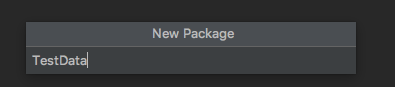
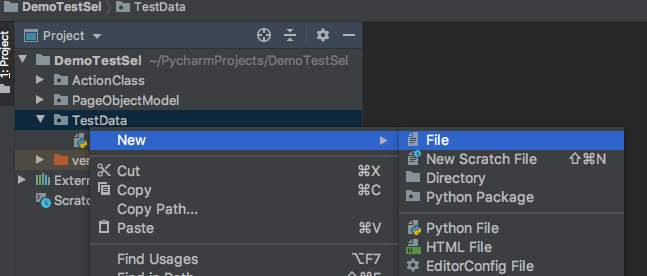
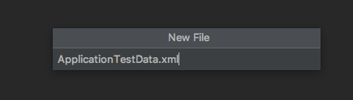
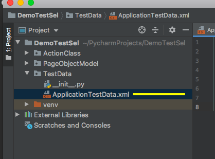

Read Automation Test Data From XML File
Right click on project --> new --> Python Package

Give Pakage name --> Click Enter --> Python Package is created successfully.

Right click on Python Package --> new --> File --> AnyXmlFile.xml --> Click Enter --> XML File is created successfully.



Now We can Add Automation Test Data as below. As an Example : Test URL , user name , email , Password.
<testdata>
<applicationurl>https://www.manual2Automation.com</applicationurl>
<useid>testUser</useid>
<password>Password$$#1</password>
<chrome_path>/Users/mkroy/Downloads/chromedriver</chrome_path>
<email>mithunroy.ee@gmail.com</email>
</testdata>
Code to read XML file using Python:
@classmethod def read_xml(cls, node_name): # parse an xml file by name my_doc = minidom.parse('/Users/MR/PythonAppium/TestDataTable/ApplicationTestData.xml') # items = mydoc.getElementsByTagName('testdata') data = my_doc.getElementsByTagName(node_name)[0] return data.firstChild.data
read_xml("applicationurl") will return 'https://www.manual2Automation.com'
read_xml("chrome_path") will return 'Users/mkroy/Downloads/chromedriver'
read_xml("email") will return 'mithunroy.ee@gmail.com'